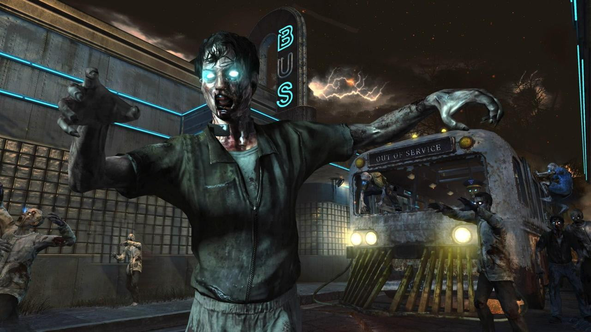
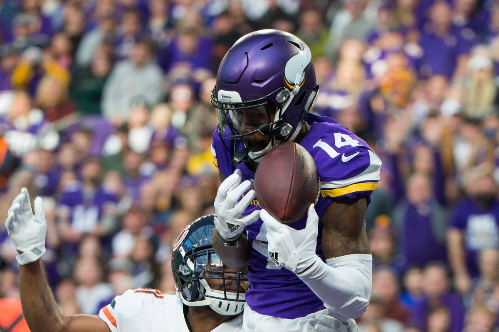
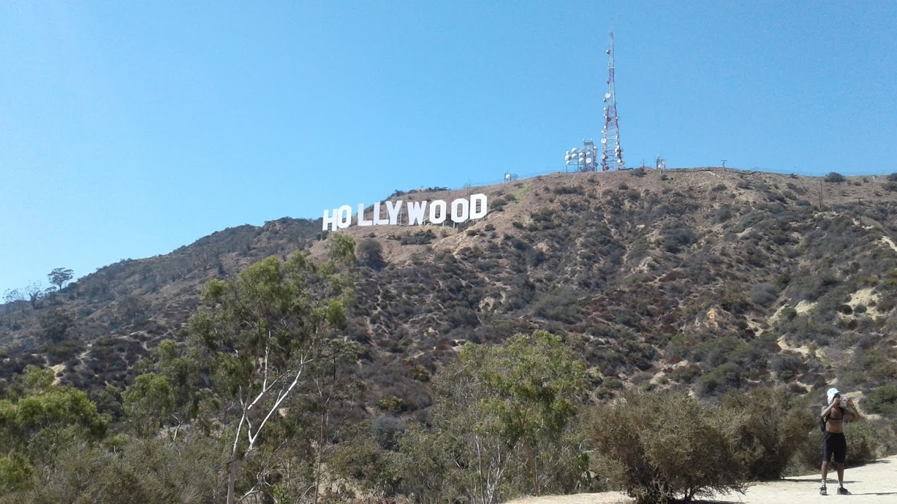

Some of my hobbies are playing video games, hiking, and sports.

I am hoping to become a video game designer in the future, my favorite video game series would have to be Call of Duty, with my top game mode being zombies the most. Other games I like are sports games like NBA2K and Madden.

I enjoy watching sports like basketball and football. I am a big Vikings fan even though they disappoint every year. My favorite player in the NFL is Stefon Diggs.
